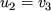
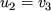
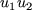
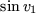
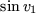

Before we give the complete syntax for an SEIF file, we continue the illustrative example that we started in Section 3.1.4 and show how to specify an input file appropriate for the problem of Section 2.5. Once again, there are many possible ways of specifying a particular problem; we give one in Figure 4.2. The arithmetic expressions given are written in Fortran.
The file must always start with an ELEMENTS card, on which a name (in this case EG3) for the example may be given (line 1), and must end with an ENDATA card (line 40).
We next need to specify the names and attributes of any auxiliary quantities and functions that we intend to use in our high level description of the element functions. These are needed to allow for consistency checks in the subsequent high-level language statements and must always occur in the TEMPORARIES section of the input file. Lines 3 to 6 indicate that we shall be using temporary quantities SINV1, ZERO, ONE and TWOP1, and the character R in the first field for these lines states that these quantities will be associated with floating point (real) values. The character M in field 1 of Lines 7 and 8 indicates that we may use the intrinsic (machine) functions SIN and COS. These are of course Fortran intrinsic functions appropriate for the high-level language used here.
We now specify any numerical values which are to be used in one or more element descriptions within the GLOBALS section. On lines 10 and 11, we allocate the values 0 and 1 to the previously defined quantities ZERO and ONE. Note that such cards require the character A in field 1 - if an assignment were to take more than 41 characters (the width of field 7), it could be continued on subsequent lines for which the string A+ is required in field 1.
Finally we need to make the actual definitions of the function and derivative values for the element types and specify the transformations from elemental to internal variables if they are used. Such specifications occur in the INDIVIDUALS section from lines 12 to 39 of the example. We recall that there are four element types 3PROD, 2PROD, SINE and SQUARE and that their attributes (names of elemental and internal variables and parameters) have been described in the SDIF file set up in Section 3.1.4. Two of the element types (3PROD and SQUARE ) use internal variables so we need to describe the relevant transformation for those.
On line 13, the presence of the character T in field 1 announces
that the data for the element type
3PROD is to follow. All the
data for this element must be specified before another element type is
considered. On lines 14 and 15 we describe the transformation from
elemental to internal variables that is used for 3PROD. Recall
that the transformation is
 and . On
line 14, the first of these transformations is given, namely that U1 is to be formed by adding 1.0 times V1 to -1.0 times V2. The second transformation
is given on the following line, namely
that U2 is formed by taking 1.0 times V3. Both lines are
marked as defining transformations by the character R
in field 1 -- continuation lines
are possible for transformations
involving more than two elemental variables on lines in which the
string R+
appears in the same field.
and . On
line 14, the first of these transformations is given, namely that U1 is to be formed by adding 1.0 times V1 to -1.0 times V2. The second transformation
is given on the following line, namely
that U2 is formed by taking 1.0 times V3. Both lines are
marked as defining transformations by the character R
in field 1 -- continuation lines
are possible for transformations
involving more than two elemental variables on lines in which the
string R+
appears in the same field.
We now specify the function and derivative values of the element type  with respect to its internal variables. On line 16, the code F in field 1 indicates that we are setting the value of the element type to U1*U2, the Fortran expression for multiplying U1 and U2. On lines 17 and 18, we specify the first derivatives of the element type with respect to its two internal variables U1 and U2 - the character G in field 1 indicates that gradient values are to be set. On line 17, the derivative with respect to the variable U1, specified in field 2, is taken and expressed as U2 in field 7. Similarly, on line 18, the derivative with respect to the variable U2 (in field 2), U1, is given in field 7. Finally, on lines 19 to 21, the second partial derivatives with respect to both internal variables are given. These derivatives appear on cards whose first field contains the character H. On line 19, the second derivative with respect to the variables U1 (in field 2) and U1 (in field 3), 0.0, is given in field 7. Similarly the second derivative with respect to the variables U1 (in field 2) and U2 (in field 3), 1.0, occurs in field 7 of line 20 and that with respect to U2 (in field 2) and U2 (in field 3), 0.0, is given in field 7 of the following line.
The same principle is applied to the specification of range
transformations,
values and derivatives
for the remaining element
types. The type 2PROD does not use a transformation to internal
variables, so derivatives
are taken with respect to the elemental variables
V1 and V2 (or one might think of the internal
variables
being V1 and V2, related to the elemental
variables through the identity transformation).
The values and
derivatives for this element type
are given on lines 22 to 28. The
type SINE again does not use special internal variables and the
required value and derivatives are given on lines 29 to 33. Note,
however, that the value and its second derivative with respect to
 both use the quantity ; for efficiency, we set the
auxiliary quantity SINV1 to the Fortran
value SIN(V1) on
line 30 and thereafter refer to SINV1 on lines 31 and 33.
Notice that this definition of auxiliary quantities occurs on a line
whose first field contains the character A.
Finally, the type SQUARE, which uses a transformation from
elemental to internal variables
both use the quantity ; for efficiency, we set the
auxiliary quantity SINV1 to the Fortran
value SIN(V1) on
line 30 and thereafter refer to SINV1 on lines 31 and 33.
Notice that this definition of auxiliary quantities occurs on a line
whose first field contains the character A.
Finally, the type SQUARE, which uses a transformation from
elemental to internal variables
 , is defined on
lines 34 to 39. Again notice that the value 2.0 occurs in both first
and second derivatives,
so the auxiliary quantity TWO is set on
line 36 to hold this value.
, is defined on
lines 34 to 39. Again notice that the value 2.0 occurs in both first
and second derivatives,
so the auxiliary quantity TWO is set on
line 36 to hold this value.